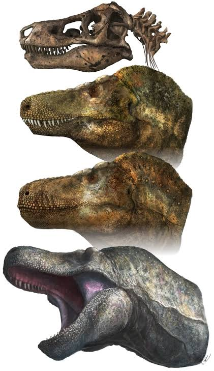

Historia

Tyrannosaurus rex (del griego latinizado tyrannus ‘tirano’ y saurus ‘lagarto’, y el latín rex, ‘rey’)1 es la única especie de Tyrannosaurus, un género monotípico de dinosaurio terópodo tiranosáurido. Vivió a finales del período Cretácico, hace aproximadamente entre 68 y 66 millones de años, en el Maastrichtiense, en lo que es hoy Norteamérica occidental, con una distribución mucho más amplia que otros tiranosáuridos. Comúnmente abreviado como T. rex, es una figura común en la cultura popular. Fue uno de los últimos dinosaurios no avianos en existir antes de la extinción masiva del Cretácico-Terciario.
Como otros tiranosáuridos, T. rex fue un carnívoro bípedo con un enorme cráneo equilibrado por una cola larga y pesada. Con relación con sus largos y poderosos miembros traseros, los miembros superiores del Tyrannosaurus eran pequeños, pero inusualmente fuertes para su tamaño, y terminaban en dos dedos con garras. Aunque otros terópodos rivalizan o superan al Tyrannosaurus rex en tamaño, todavía es el mayor tiranosáurido conocido y uno de los mayores depredadores conocidos de la Tierra, midiendo hasta 12 metros de largo, metros de altura hasta las caderas, y con pesos estimados entre 6 a 8 toneladas. Durante mucho tiempo fue el mayor carnívoro de su ecosistema, debió haber sido el superpredador, cazando hadrosáuridos y ceratópsidos, aunque algunos expertos han sugerido que era principalmente carroñero. El debate de si Tyrannosaurus fue un depredador dominante o un carroñero es uno de los más largos en la paleontología.
Hay más de 30 especímenes de Tyrannosaurus rex identificados, algunos de los cuales son esqueletos casi completos. Se han encontrado tejido conjuntivo y proteínas en por lo menos uno de estos especímenes. La abundancia de material fósil ha permitido investigar en detalle muchos aspectos de su biología, incluyendo su ciclo de vida y su biomecánica. Los hábitos de alimentación, la fisiología y la velocidad potencial del Tyrannosaurus rex son objeto de controversia. Su taxonomía es también polémica, con algunos científicos que consideran al Tarbosaurus bataar de Asia como una segunda especie de Tyrannosaurus mientras otros mantienen a Tarbosaurus como género separado. Varios otros géneros de tiranosaúridos norteamericanos también han sido sinonimizados a Tyrannosaurus.
Tyrannosaurus podía alcanzar los 12 metros de longitud, con un peso estimado de entre 6 y más de 9 toneladas. El tiranosaurio poseía un gran cráneo de 1,50 m provisto de fenestras oculares y nasales. Su cráneo presenta un gran número de huesos fusionados, supliendo la movilidad por una estructura más maciza, cosa inusual en los terópodos, que por lo general tenían huesos ligeros. El cuello era grueso, musculoso y corto.
Tyrannosaurus rex fue uno de los mayores carnívoros que han existido sobre la tierra. El mayor espécimen cuasicompleto, FMNH PR2081 (apodado «Sue»), midió 12 metros de largo, y 4 de alto hasta las caderas. El estimado de la masa total ha variado a lo largo de los años, desde un máximo de 7,2 toneladas, a 4,5 como mínimo, con los últimos estimativos entre 5,4 y 6,8 toneladas, y algunas estimaciones llegan hasta las 9 toneladas para los mayores especímenes conocidos de Tyrannosaurus. Aunque Tyrannosaurus rex era más largo que el bien conocido terópodo del Jurásico Allosaurus y que el Carcharodontosaurus africano, era ligeramente más pequeño que otros terópodos del Cretácico como Spinosaurus y Giganotosaurus.